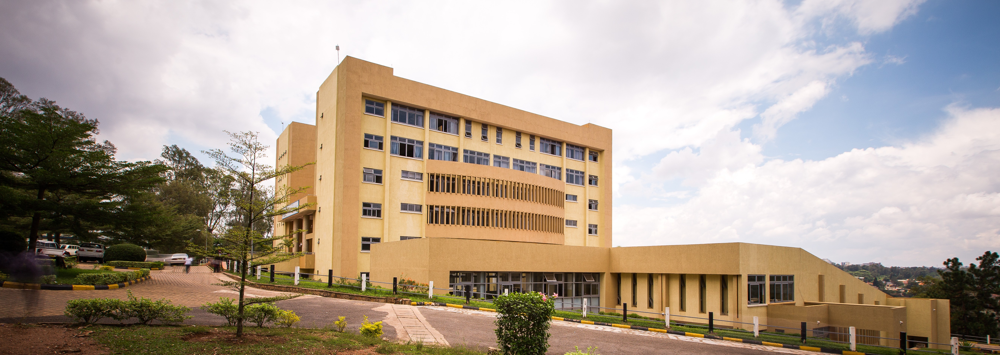

School of finance and banking 8
stored complex building

Situated on the hill of Niboye/Kicukiro, just 3 km from Kigali’s CBD, the School of Finance and Banking is an 8-storey academic complex designed to provide a modern, functional, and comfortable learning environment. The 8,104 sqm complex accommodates both private tenants and includes a full learning facility.
The building features two 569-seat auditoriums, three open-floor classrooms from levels 1 to 7, and administrative office desks on floor 8. Designed in compliance with Rwanda’s building regulations and international standards, the facility supports both academic and research functions in a safe, fully-serviced structure.
Our role encompassed environmental and geotechnical assessments, structural, interior, infrastructure, and MEP (mechanical, electrical, plumbing, vacuum systems) coordination supervision. L&F’s engineering office oversaw the design–structure optimization, construction supervision, progress reporting, verification of completed works, and final inspection.
This project reflects L&F’s successful integration of intelligent spatial layout, enhanced daylight use, and natural air circulation. The building has quickly grown into a highly sought educational facility that enhances the learning experience and supports institutional growth.